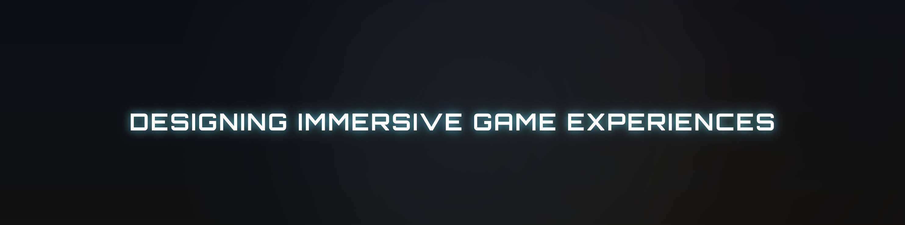

Frontend Developer — in crescita, costruisco esperienze digitali
Sono Antonio Puca, frontend developer in crescita. Progetto e sviluppo interfacce web moderne, curate nel design e nella struttura, con attenzione all’esperienza utente. Sto costruendo il mio percorso attraverso progetti reali, migliorando ogni giorno le mie competenze nello sviluppo frontend.
La struttura delle pagine web
Lo stile e i colori
Le basi dello sviluppo web
Layout e allineamento degli elementi

Sito portfolio realizzato con HTML e CSS, con layout responsive e design personalizzato.
Sito professionale sviluppato con HTML e CSS, struttura chiara e design orientato alla leggibilità.
Sito professionale con layout responsive e attenzione all’organizzazione dei contenuti.
Hai un progetto o vuoi collaborare? Contattami e parliamone.